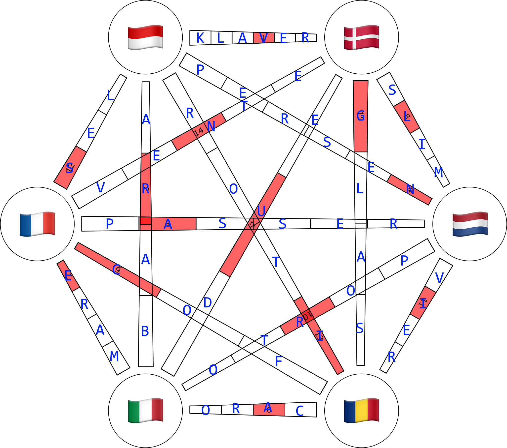

Solution: Unreal Estate
Answer: VERNACULARISING
Written by chimpaznee and phenomist
The puzzle contains a large number of images, which we should identify. Each image represents a word, and they are given in alphabetical order, which helps disambiguate them:
BOAR, BREAD, CELL, CLEVER, CLUBS, COFFIN, COMPASS, DEAR, DIAMONDS, EMBER, FIRE, FOUR, GLASS, GRATUITY, HARBOR, JIB, PASS, PIANO, PIGEON, POND, POSTAGE, ROTATE, SALT, SEA, SELLING, SLIME, SQUEEZE, TWO, VOICE, WAIT.
Now comes the meat of the puzzle. There are six national flags above the diagram, which may be taken to represent languages. The six flags are, in fact, given in alphabetical order by language, rather than country. They represent six languages that use the Latin script: Danish, Dutch, French, Indonesian, Italian and Romanian. The diagram under the flags is a K6 complete graph, with 6 nodes and 15 edges. The number of nodes matches the number of languages, and there are 30 images and 15 edges, which suggests trying to somehow pair them up.
{kind=link}
We can now try translating some of the words to the six languages. It turns out that some pairs of words are spelled the same way in different languages. For example, the Indonesian word for "BREAD" and the Romanian word for "ROTATE" are both "ROTI". This phenomenon, where a word looks or sounds identical or similar in different languages but has a different meaning in each language, is known as "false friends" (this is also alluded to by "Estate" in the title being an Italian false friend for "Summer"). With each node in the diagram representing a language, and each edge representing a false friend, it is possible to find a false friend for each of the 15 possible pairings of the 6 languages in the puzzle:
| Language 1 | Word 1 | Language 2 | Word 2 | False friend |
|---|---|---|---|---|
| Danish | SLIME | Dutch | CLEVER | SLIM |
| Danish | WAIT | French | SELLING | VENTE |
| Danish | PIANO | Indonesian | CLUBS (suit) | KLAVER |
| Danish | PIGEON | Italian | TWO | DUE |
| Danish | GLASS | Romanian | VOICE | GLAS |
| Dutch | COMPASS (tool) | French | PASS | PASSER |
| Dutch | SQUEEZE | Indonesian | GRATUITY | PERSEN |
| Dutch | POSTAGE | Italian | HARBOR | PORTO |
| Dutch | FOUR | Romanian | BOAR | VIER |
| French | SALT | Indonesian | CELL | SEL |
| French | POND | Italian | SEA | MARE |
| French | JIB | Romanian | FIRE | FOC |
| Indonesian | EMBER | Italian | COFFIN | BARA |
| Indonesian | BREAD | Romanian | ROTATE | ROTI |
| Italian | DEAR | Romanian | DIAMONDS (suit) | CARO |
By taking the number of spaces on each edge into account, there is a unique way to put the words in the diagram, such that each node has five words in the same language coming out of it. The word direction is disambiguated by the orientations of the numbers and by the changing width of the edges:

The letters in the numbered cells spell out the final answer VERNACULARISING - which is what solvers had to do in order to solve this puzzle (by translating the initial words to the respective languages).
Author’s Notes
This was the last Summer puzzle to be written. The initial conception of it came as a result of a theming challenge. We dwelled on the idea of false friend puzzle for a while (with "estate" being Italian for "summer), and after pondering over this for a bit we came up with the concept of finding all possible pairings between 6 languages (and conveniently, the answer length of 15 fit exactly for this).
Finding the pairs of words was a fairly difficult task, which took several man-hours without using a script. We did eventually manage to find at least one false friend for every language pair. There are some words that have an ambiguous pairing (like "GLAS" being "GLASS" in both Danish and Dutch), but these are disambiguated by the other pairs that appear in the puzzle. However, there was one particular egregious ambiguity that managed to turn up in an earlier testsolving version of the puzzle: APPLE/CALL, which can be translated as both "APEL" in Indonesian/Romanian or "APPEL" in Dutch/French. We thought that it would be no fun for teams that discover the "wrong" translation first, and replaced that pair with "ROTI".
There were still some ambiguities that slipped through nevertheless that we would've liked to avoid. The worst of this was the fact that "KLAVER" in Indonesian is actually borrowed from Dutch. We haven't realized this until this was too late, and we're sorry if your team got tripped up by this. In hindsight, we should've probably also selected a more diverse set of languages.
Here are some other notable false friends we discovered that did not make the cut:
MAND: MAN (Danish) / BASKET (Dutch)
PONT: FERRY (Dutch) / BRIDGE (French)
SEPT: SEVEN (French) / SEPTUM (Romanian)
VALLE: WHEY (Danish) / DALE (Italian)